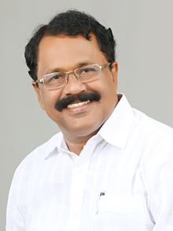
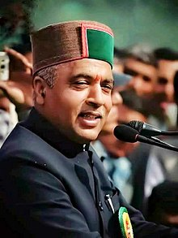
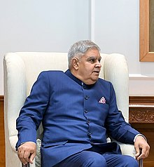

| Sr.No. | State Name | Capital Name | Chief-Minister | Governor | ||
|---|---|---|---|---|---|---|
| CM Name | CM Image | Governor Name | Governor Image | |||
| 1. | Bihar | Patna | Nitish Kumar | Phagu Chauhan | |
|
| 2. | Uttar Pradesh | Lucknow | Shri Yogi Adityanath | Anandiben Patel | |
|
| 3. | Andhra Pradesh | Hyderabad (Amaravati) | Y.S. Jagan Mohan Reddy | Biswabhusan Harichandan | ||
| 4. | Arunachal Pradesh | Itanagar | Pema Khandu | B.D. Mishra | ||
| 5. | Assam | Dispur | Himanta Biswa Sarma | Jagdish Mukhie | |
|
| 6. | Chhattisgarh | Raipur | Bhupesh Baghel | Ms. Anusuiya Uikey | ||
| 7. | Goa | Panaji | Dr. Pramod Sawant | P.S. Sreedharan Pillai |  | |
| 8. | Gujarat | Gandhinagar | Bhupendra Patel | |
Acharya Devvrat | |
| 9. | Haryana | Chandigarh | Shri Manohar Lal | Shri Bandaru Dattatreya | |
|
| 10. | Himachal Pradesh | Shimla | Jai Ram Thakur |  | Rajendra Arlekar | |
| 11. | Jammu & Kashmir | Srinagar | Mehbooba Mufti | Manoj Kumar | ||
| 12. | Jharkhand | Ranchi | Shri Hemant Soren | Shri Ramesh Bais | |
|
| 13. | Karnataka | Bengaluru | Basavaraj Bommai | Thawar Chand Gehlot | ||
| 14. | Kerala | Thiruvananthapuram | Pinarayi Vijayan | Arif Mohammad Khan | ||
| 15. | Madhya Pradesh | Bhopal | Shivraj Singh Chouhan | Mangubhai C. Patel | ||
| 16. | Maharashtra | Mumbai | Eknath Shinde | |
Bhagat Singh Koshyari | |
| 17. | Manipur | Imphal | N. Biren Singh | La Ganesan | ||
| 18. | Meghalaya | Shillong | Shri Conrad Sangma | Satya Pal Malik | ||
| 19. | Mizoram | Aizawl | Zoramthanga | K. Hari Babu | |
|
| 20. | Nagaland | Kohima | Neiphiu Rio | Shri Jagdish Mukhie | ||
| 21. | Odisha | Bhubaneshwar | Naveen Patnaik | Ganeshi Lal Mathur | ||
| 22. | Punjab | Chandigarh | Bhagwant Mann | Banwarilal Purohit | ||
| 23. | Rajasthan | jaipur | Ashok Gehlot | Shri Kalraj Mishra | ||
| 24. | Sikkim | Gangtok | Prem Singh Tamang | Ganga Prasad | ||
| 25. | Tamil Nadu | Chennai | M.K. Stalin | Ravindra Narayana Ravi | ||
| 26. | Telangana | Hyderabad | Kalvakuntla Chandrashekar Rao | Tamilisai Soundararajan | ||
| 27. | Tripura | Agartala | Manik Saha | Satyadev Narayan Arya | ||
| 28. | Uttarakhand | Dehradun | Pushkar Singh Dhami | Gurmit Singh | |
|
| 29. | West Bangal | Kolkata | Mamata Banerjeein | Jagdeep Dhankhar |  | |